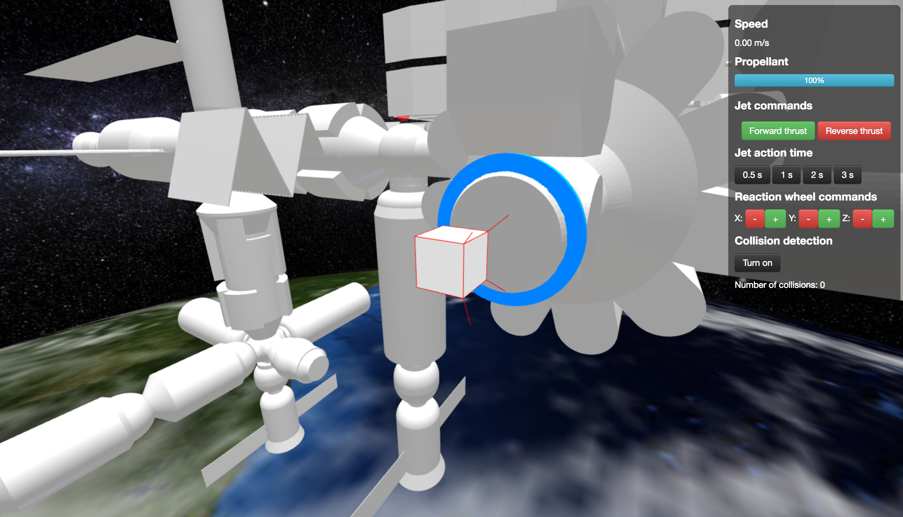
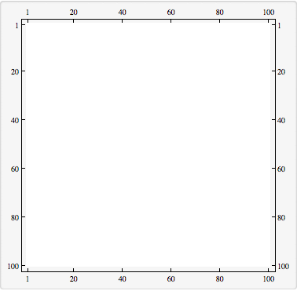
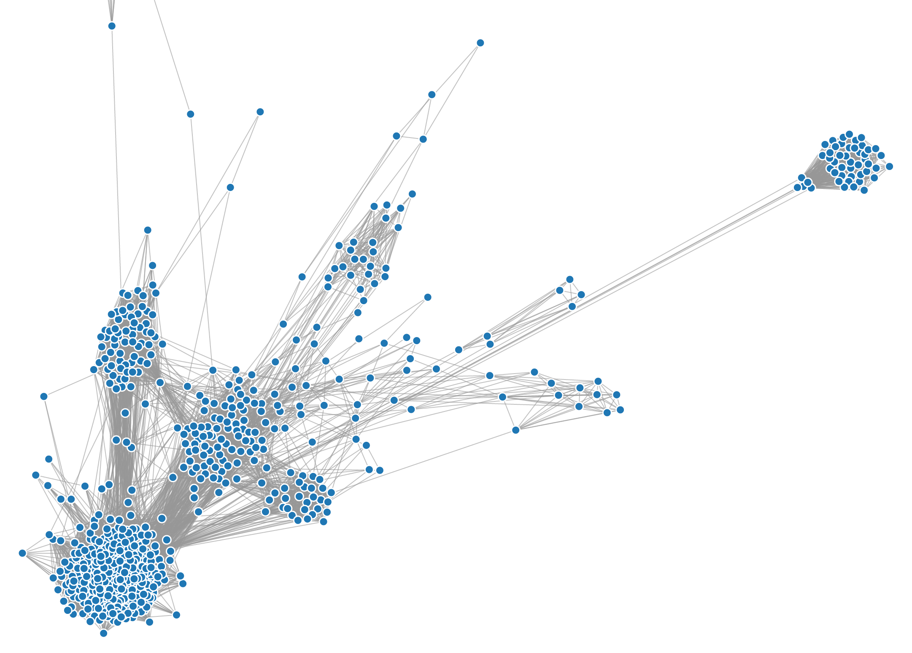
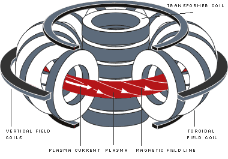
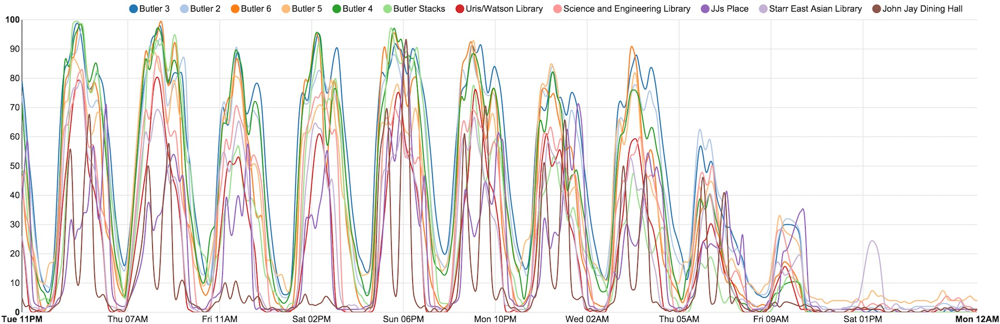

As we contemplate long-term manned missions to Mars and beyond, we need a convenient way to inspect and repair the damage to spacecraft caused by micrometeorites, space debris, and radiation. I designed a robot for this purpose with a team of fellow students in the excellent Human Spaceflight class taught by former astronaut Mike Massimino. The robot is designed to be a companion for spacecraft and space habitats like the International Space Station, and can be deployed to inspect the exterior of any structure in microgravity.

The robot is cube-shaped with thrusters at the center of each face and an omnidirectional antenna. It also has a camera at the center of each face, and their video feeds are stitched together to form an immersive view of every direction surrounding the robot. Piloting the robot is supposed to be very easy to learn, and would consist of setting a direction in the immersive view and pressing go/reverse at different speeds. Finally, one face also has precision and infrared cameras, a trace gas analyzer, and a flashlight, to closely inspect damaged areas. When the robot is not being used, it can rest and recharge in the airlock.
I created a simulation of the robot in the ISS environment to train prospective pilots. Interestingly, it runs pretty well on iPhones (20 MB download), but collision detection is slow even on desktops.
Continue reading...
Langton's Ant
This is a start toward solving problem 349 from Project Euler:
An ant moves on a regular grid of squares that are coloured either black or white. The ant is always oriented in one of the cardinal directions (left, right, up or down) and moves from square to adjacent square according to the following rules:
-
if it is on a black square, it flips the color of the square to white, rotates 90 degrees counterclockwise and moves forward one square.
-
if it is on a white square, it flips the color of the square to black, rotates 90 degrees clockwise and moves forward one square.
Starting with a grid that is entirely white, how many squares are black after $10^{18}$ moves of the ant?
I made a Mathematica simulation to find the point around which the motion of the ant stops being random and enters a "highway."

After spending a lot of time at the beginning going through seemingly random configurations, the ant reaches a configuration that makes it "repeat" the same sequence and launch into a highway.
Continue reading...
This is a project I worked on with a team at PennApps in winter 2015. It finds random songs on Spotify matching the tempo of your movements according to the iPhone's accelerometer.
I did the iOS programming, but it currently requires a backend Flask server to be running to calculate bpm and use the Echonest API.
Continue reading...
Wouldn't it be cool if you could chat with strangers around you in a coffee shop, or even around an entire campus? A couple friends and I thought so, and we made a bluetooth chat app for Android phones during Columbia's ADI hackathon.
It's a fun proof of concept, and hopefully in the future we'll figure out some decentralized protocol like Bittorrent for phones to communicate over. This could be useful for people in disaster areas when cell towers get damaged, or in very crowded places where networks get overloaded.
Continue reading...
This is a tool to make a force-directed graph of your Facebook friend network. Each friend is represented as a node, and is connected to each of your mutual friends. Each time this page is loaded, my friends pull each other together, as though they were connected by springs, in a physical simulation that results in a final balance. Highly connected groups pull each other close and will end up the way I group my friends in my mind: clustered around schools, towns, events, and organizations. This is what my network looks like:

Continue reading...
Tokamaks are donut-shaped containers for hydrogen plasmas that we heat to ludicrous temperatures so that charged particles overcome their mutual repulsion and fuse, releasing energy that could be used to turn a steam turbine and power the lights in your house. To keep the plasma at such enormous temperatures and to protect the Tokamak's interior, the plasma is suspended in midair using magnetic fields. Tokamaks are surrounded by electromagnetic coils that generate powerful magnetic fields, but they also rely on an electric current going through the plasma itself to create the perfect confining magnetic field. This plasma current is induced by a transformer coil at the center of the torus:

I'm working on a Python program that uses magnetic sensor measurements to reconstruct the plasma current profile on Columbia's High-beta Tokamak.
It can calculate the magnetic field at any location resulting from current in a circular coil:
$$B = G(r, z, r_{coil}, z_{coil})\cdot I_{coil}$$
where G is a Green's function of their positions in cylindrical coordinates. For each magnetic sensor, we subtract the coil fields from the sensor's readings to get the field of the plasma current alone. Then we do the linear algebra version of $I = G^{-1}B$ to calculate the plasma current over a grid of different positions.
Continue reading...
During the last finals week of my junior year, an interesting website came online at density.adicu.com. It tracks the number of devices connected to WiFi access points at many places on campus, and translates these numbers into a crowdedness metric (100% := full, 0% := empty). The website, however, only shows the crowdedness at the instant you access it. ρ(t) is a tool I made while procrastinating during finals week that scrapes data from the website every 15 minutes and shows it using a D3 plot. It's not a smart solution now since there's an API, but it can show you how to scrape a website.

Above is what ρ(t) recorded during finals at Columbia. The largest fluctuations are between daytime and nighttime (although a fair number of people stay active at Butler, the 24-hour library). We can also see on most days a swell in activity after lunchtime. In my experience, finding a spot in the library was impossible just after lunch.
And we also see the beautiful, gradual death of finals week over three days.
Continue reading...
I couldn't remember having ever derived it. Wikipedia said it was fun, so I tried:
$$\begin{align}
0 &= ax^2+bx+c = x^2+\frac bax+\frac ca\\
0 &= (x+x_1)(x+x_2) = x^2+(x_1+x_2)x+x_1x_2
\end{align}$$
$$\frac ba = x_1+x_2\rightarrow x_2 = \frac ba-x_1$$
$$\frac ca = x_1x_2 = x_1\left(\frac ba -x_1\right)\rightarrow 0 = x_1^2-\frac bax_1+\frac ca := (x_1+x_3)^2$$
We get another quadratic equation which we say has a single solution $x_3$ (why not two?).
$$-\frac ba = 2x_3 \rightarrow x_3 = -\frac b{2a}$$
$$\frac ca = x_3^2 = \frac{b^2}{4a^2}\rightarrow \frac{b^2}{4a^2}-\frac ca = \left(x_1-\frac b{2a}\right)^2$$
$$\pm\sqrt{\frac{b^2}{4a^2}-\frac ca} = x_1-\frac b{2a}$$
$$x_{1,2} = -\frac b{2a}\pm\sqrt{\frac{b^2}{4a^2}-\frac ca} = \frac{-b\pm\sqrt{b^2-4ac}}{2a}$$
Continue reading...
{kind=link}